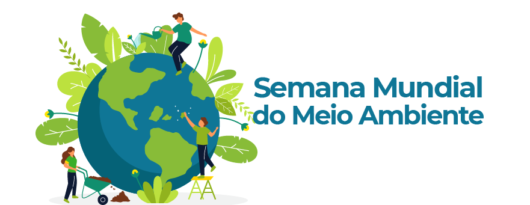

Bem vindo ao guia da semana do meio ambiente.
A Semana do Meio Ambiente é uma data criada pela ONU que tem o objetivo de concientizar todas as da população.
Este site irá trazer alguns assuntos muito importantes a serem abordardos.
Clique aqui para continuar